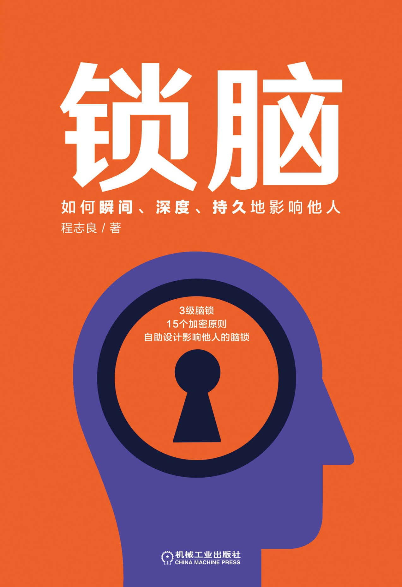

|  |
锁脑：如何瞬间、深度、持久地影响他人
程志良
|
前言
第一部分 直觉锁：瞬间将大脑锁上
第一章 一旦认出就会锁住
1 一旦确定就会认出
2 大脑如何认出信息
3 直觉锁：第一时间的第一感觉
第二章 直觉锁加密原则之一：定向启动
1 有效的定向启动
2 预先设定就会带锁
3 大脑如何产生信任
4 定向启动的三个原则
第三章 直觉锁加密原则之二：情感匹配
1 大脑决策的核心是情感
2 如何自带好感
3 情感要符合人们的期待
4 复杂和混乱都是在破坏情感
5 与有情感的事物发生关系
第四章 直觉锁加密原则之三：少而显著
1 少就可以带锁
2 少而简单容易让人相信
3 只要不费力气大脑就会喜欢
4 从细节中可以快速提炼出情感
5 价值来自细节
6 如何制造正向扩散
7 光环就是保护层
第五章 直觉锁加密原则之四：易于获得
1 轻松认出大脑就会锁上
2 增强画面感
3 增强替代性
4 增强熟悉感
5 增强典型性
6 增强愉悦感
第六章 直觉锁加密原则之五：情景开启
1 情景决定价值
2 情景决定感觉
3 借助情景开启需求
第二部分 理性锁：深度地将大脑锁住
第七章 理性是变相的认出
1 你为什么能做出更加适当的行为
2 构建事物未来可能的样子
3 赋予了新的意义
第八章 理性锁加密原则一：情感增强
1 情感转变给人理性的错觉
2 得与失哪种情感更强烈
3 联合强烈的感情因素影响决策
第九章 理性锁加密原则二：意志增强
1 意志增强就是动力增强
2 激起大脑补全的意志
3 增强限制感
4 从背景中分离出来的方法
第十章 理性锁加密原则三：时间优化
1 借助时间来优化你的目标
2 3＋7＝美好未来
3 引发决策焦虑改变偏好
4 解除未来负面的可能
5 没有未来的未来
第十一章 理性锁加密原则四：价值锁定
1 锁定已经产生的价值
2 锁定已经投入的价值
3 情感重心就是价值所在
4 如何让价值唯一化
第十二章 理性锁加密原则五：行为优先
1 先有正面的行为，后有喜欢
2 引导行为优化目标
3 增强参与感
第三部分 自我锁：持久地将大脑锁住
第十三章 与我相关就会重要
1 自我锁：更顽固的脑锁
2 大部分人的信念
3 大部分人的自我意志
第十四章 自我锁加密原则一：强势关联
1 如何与用户建立强势关联
2 和你一样的大多数
3 向中心收缩：个性化锁定
4 人格化你的信息
5 强势关联是情感强势增强
第十五章 自我锁加密原则二：进入的渴望
1 自我是进入某种状态的执念
2 增强仪式感
3 增强自我连接
第十六章 自我锁加密原则三：逃离的意志
1 增强自主感
2 重设有效的参照点
3 假设一种负面可能
4 感到自我是一种负面的存在
第十七章 自我锁加密原则四：逆反心理
1 人人都有坚硬的壳
2 不可能，绝对不可能
3 逆着他来才能顺了你意
4 成为人们信念的一部分
第十八章 自我锁加密原则五：认知傲慢
1 尝到甜头，就吃不了苦头
2 启动既定的自我
3 抗拒的局面下，如何升级他人的认知
4 让他人产生心理优势
5 根据用户偏见讲故事